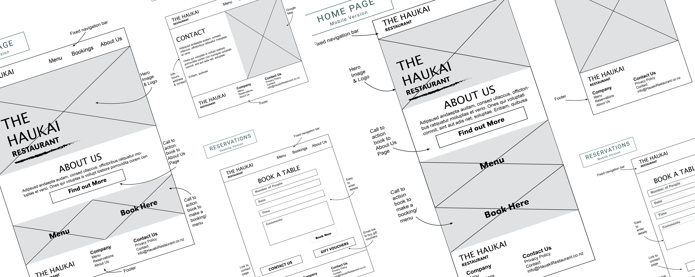

Haukai restaurant is a fictional fine dining restaurant, specialised in Māori kai, based in the Bay of Islands. A business focused on appealing to locals and tourists visiting the area. As a growing family business, specialising in Māori culture, incorporating karakia and other cultural elements. The restaurant is only open in the evenings at the moment, from Wednesday to Sunday inclusive.
Build an interactive and responsive web application to attract customers, increasing awareness and engagement of the site. The owners also want customers to experience Te Ao Māori with the use of karakia for blessing food and other Māori culture elements in their new web application.
xxxx
Wireframes of the website's interface that illstruates the content, features and layout of the key web pages. As the website is aimed to be responsive, working on both a desktop and moblie device. Two versions of the website was outlined to how the different devices will display the website.
